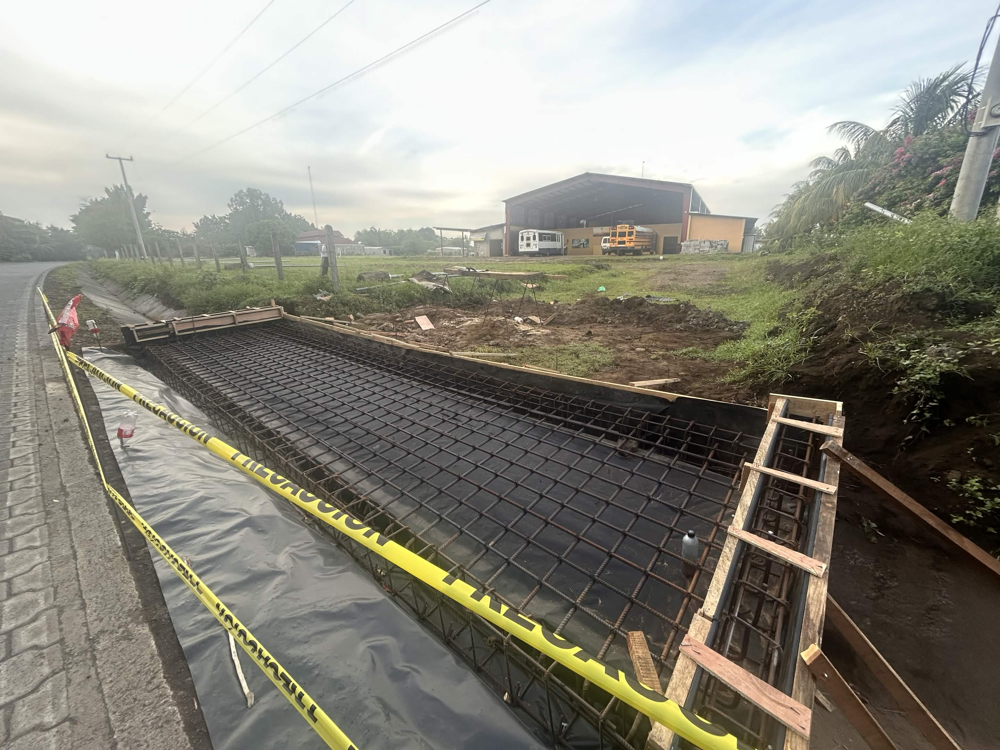
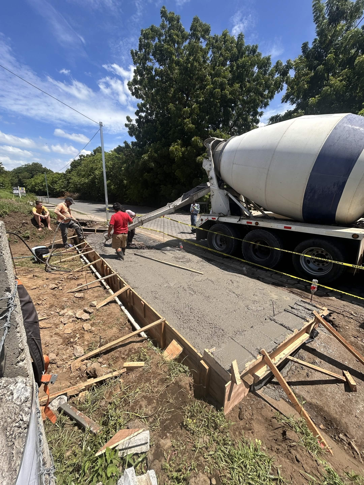
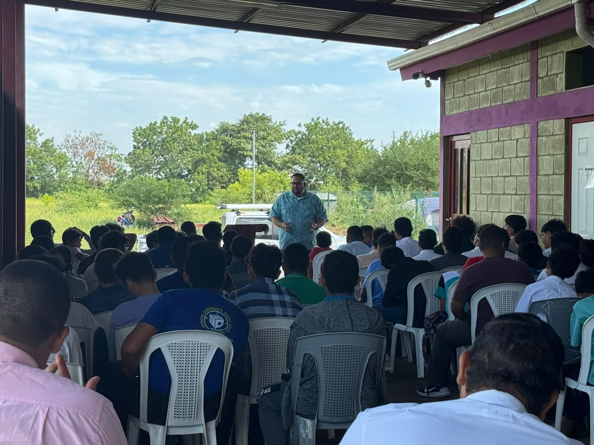
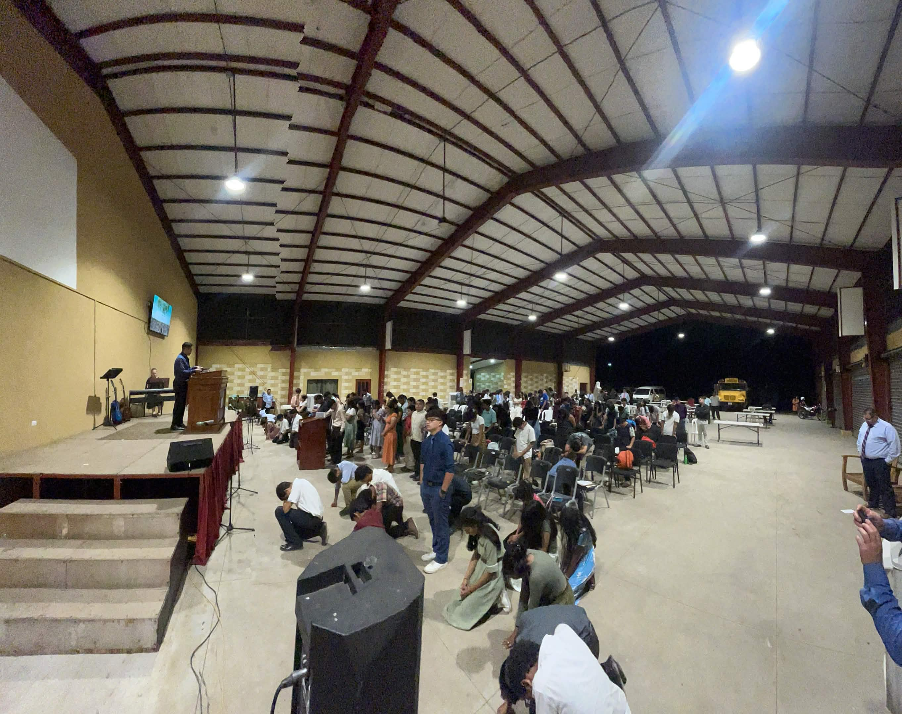

Dear Prayer Partners in Christ,
We continue to be abundantly blessed by your faithful prayers and generous support as we serve Christ here in Nicaragua. Thank you for standing with us in ministry.
Celebrating God's Faithfulness
This month we gathered to celebrate our church mothers in a special Mother's Day service. It was a wonderful time to honor the faithful women who serve so sacrificially in our congregation and community. We were reminded of their dedication to the Lord and their influence in shaping our church family.


Building for Ministry Growth
God is providing resources for important facility improvements to serve our community better. We are currently constructing a new on-ramp to our property, making our facilities more accessible to all who wish to worship and serve with us. We are grateful for those who have contributed toward this project—your generosity is enabling us to better serve our community. Additionally, we have recently completed a beautiful upgrade to our main auditorium with a new audio visual booth. We were also visited by some friends of a supporting church in Texas. They were a blessing to our family and ministry in many ways. The Lord led them to generously supply equipment to enable our church to start live-streaming. They gave of their time to help us re-install our audio system (after the re-model) and get the video up and running. These improvements enhance our worship experience and expand our ministry capabilities for reaching more people with the Gospel.




Investing in the Next Generation
For the past 7 years, the Lord has allowed us to hold a National Teen Conference with the purpose of investing in and leading teenagers to grow in their walk with the Lord and commit their lives to following Christ. Over these years, we have witnessed many teens come to know the Lord, others baptized, and many more surrender to serve Him. Below are photos from our 2025 conference:


This year, God willing, we will be hosting close to 300 teenagers during the second week of July. Our hearts' desire is to see God do a mighty work through the preaching and teaching of His Word, for fellowship to be a blessing, and for our young people to experience transformative encounters with Christ.
We charge only $10 per teenager to ensure accessibility for all families, regardless of economic circumstances. However, our costs have grown as the conference has expanded. We are still needing $5,302 to cover these essential expenses:
• House rental for teen guys: $300
• Large tarpaulin rentals (3): $320
• Chair rentals for 4 days (150): $82
• Mattress purchase (100 @ $22 each): $2,200
• Industrial Swamp Coolers (2 @ $1,200): $2,400
Total Needed: $5,302
If you feel the Lord leading you to give toward this ministry investment in the next generation of leaders, we would be deeply grateful.
Vacation Bible School
In the second week of July, we will also be hosting Vacation Bible School, and we are expecting hundreds of children to participate. This is an exciting opportunity to reach the younger generation with the Gospel and plant seeds of faith that will bear fruit for years to come.
Thank you for your partnership in the Gospel. Your prayers, support, and encouragement mean more than words can express. We covet your continued intercession as we seek to glorify Christ and advance His Kingdom here in Central America.
Ricardo & Family
Nicaragua Ministry